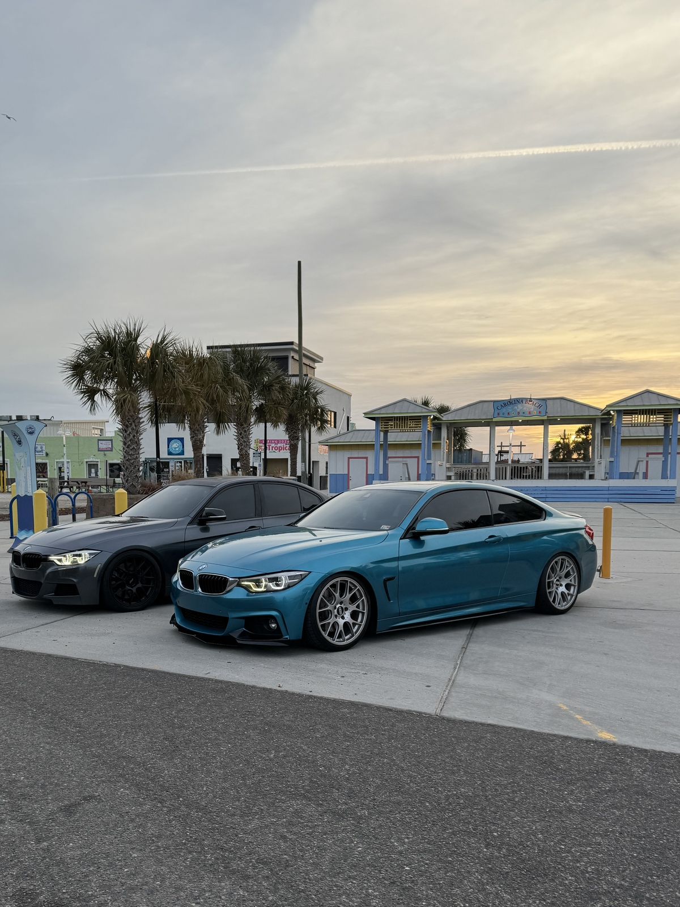
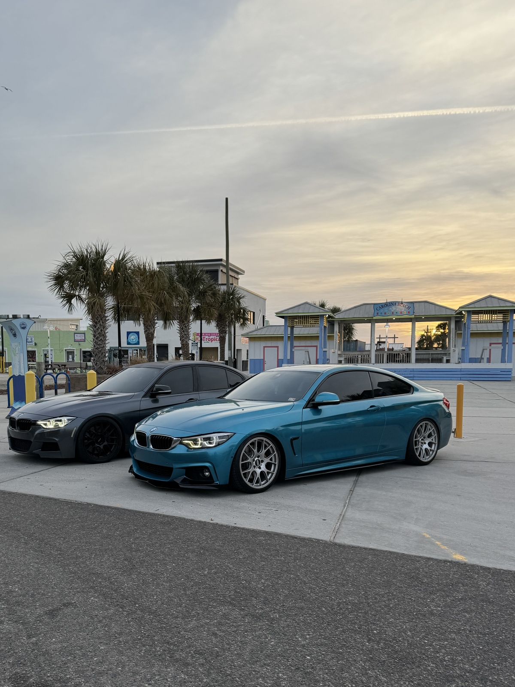

Welcome to C3
The 49ers Car Culture Club is a friendly place for car fans of all kinds. It does not matter if you daily a stock commuter, have a full build, or just like looking at cars — everyone is welcome.
We host meets, cruises, workshops, and photo days during the semester. Check the Events page for dates and times, then come hang out with other people who get just as excited about cars as you do.

What is C3?
C3 is built around six simple questions: who, what, where, when, why, and how. Together, they explain what our club is all about.
Who
UNC Charlotte students, alumni, and friends who enjoy cars and car culture.
What
Casual meets, cruises, tech nights, maintenance workshops, and photo days.
Where
On campus near the Student Union and CRI Deck, plus local Charlotte spots.
When
At least one event per month during fall and spring, plus bonus meets.
Why
A relaxed, safe community around cars and driving — no ego, just people who love cars.
How
Fill out the Join form, follow our announcements, then come say hi at a meet.
Scenes from C3
Some of the kind of moments you’ll see on the Gallery page.

 
